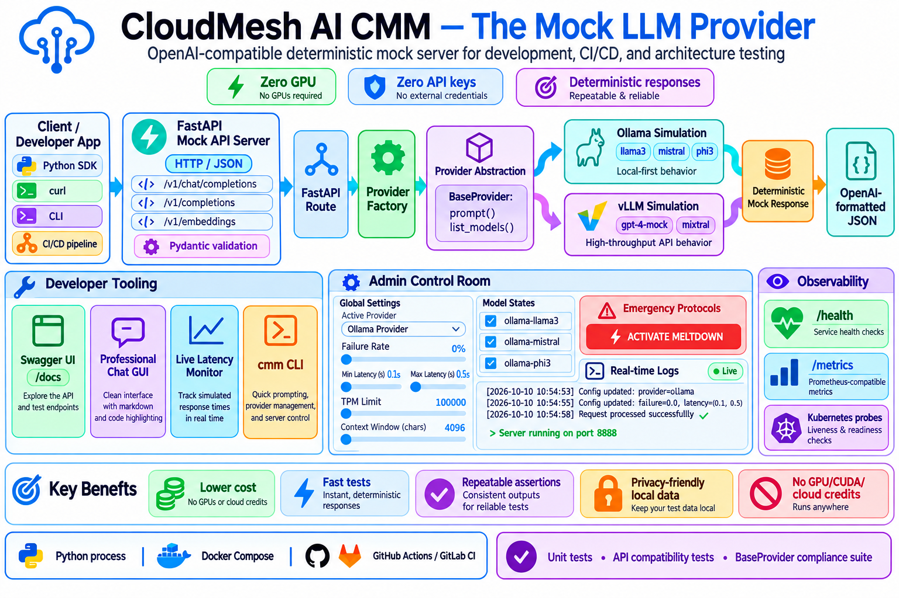
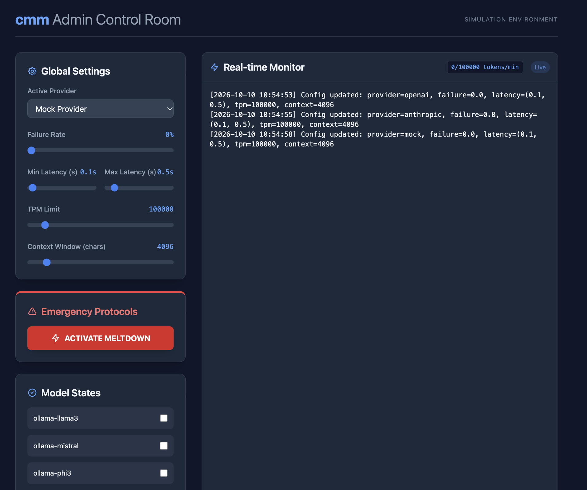

Cloudmesh AI llm-mock (Mock LLM Provider)

cloudmesh-ai-llm-mock is a professional-grade, OpenAI-compatible mock LLM service designed for developers and testers. It allows you to simulate various LLM providers and production-grade failures without needing actual GPU infrastructure or expensive API keys, making it the perfect tool for CI/CD pipelines, local development, and resilience testing.
Key Features
- OpenAI-Compatible API: Implements the standard
/v1/chat/completions,/v1/completions, and/v1/embeddingsendpoints. Swap real LLM endpoints for this mock server with zero code changes. - Multi-Provider Simulation: High-fidelity simulation of different providers (Ollama, vLLM, Anthropic, Azure OpenAI, AWS Bedrock), including provider-specific response headers and error formats (Quirks).
-
Chaos Engineering Engine: Test your application's resilience by simulating real-world API instability:
- Random Failures: Inject 429 (Rate Limit) and 500 (Internal Error) responses.
- Simulated Latency: Configure min/max delays to test timeout handling.
- TPM & Context Limits: Simulate Tokens-Per-Minute limits and Context Window overflows.
- GPU OOM Simulation: Restrict which models are "loaded" to simulate memory errors.
- The Meltdown Profile: A one-click catastrophic failure sequence (Latency $\rightarrow$ Total Failure $\rightarrow$ Service Unavailable).
- Scenario-Based Mocking: Move beyond static strings. Use keyword-based templates to simulate specific behaviors like Safety Refusals, Hallucinations, or Edge-Case Responses.
-
Dual-Interface GUI:
-
User Chat UI (
/chat): A polished, real-time markdown chat interface with a live latency monitor. - Admin Dashboard (
/admin): A powerful control center to toggle chaos settings, manage loaded models, and edit scenarios in real-time. - Observability Mocks: Includes mock
/healthand/metricsendpoints to test Kubernetes probes and monitoring stacks.
Quick Start
1. Installation
git clone https://github.com/cloudmesh-ai/cloudmesh-ai-llm-mock.git
cd cloudmesh-ai-llm-mock
pip install -e .
2. Using the Mock Server
Start the server to expose the OpenAI-compatible API:
cmm serve --port 8888
The server is now available at http://localhost:8888.
Explore the Interfaces:
- User Chat UI:
http://localhost:8888/chat - Admin Dashboard:
http://localhost:8888/admin - API Documentation:
http://localhost:8888/docs
Example API call:
curl http://localhost:8888/v1/chat/completions \
-H "Content-Type: application/json" \
-d '{
"model": "ollama-llama3",
"messages": [{"role": "user", "content": "Hello!"}]
}'
3. Using the CLI
The cmm command allows you to interact with the mock providers directly:
# Send a prompt using the default provider
cmm prompt "What is Cloudmesh AI?"
# Switch the active provider to vLLM
cmm provider set vllm
# List available models for the active provider
cmm list
Mock Provider Matrix
| Provider | Simulated Behavior | Key Models | Implementation |
|---|---|---|---|
| Ollama | Local-first LLM feel | llama3, mistral, phi3 |
✅ Mocked |
| vLLM | High-throughput API feel | gpt-4-mock, mixtral |
✅ Mocked |
| Anthropic | Claude-style responses & headers | claude-3-opus, haiku |
✅ Mocked |
| Azure OpenAI | Enterprise API feel & quirks | gpt-4, gpt-35-turbo |
✅ Mocked |
| AWS Bedrock | AWS-style error formats | titan, claude-v2 |
✅ Mocked |
Docker Deployment
Run the mock server using Docker for an isolated setup:
# Start the server in the background
docker-compose up -d
The server will be available at http://localhost:8888. Your configuration is persisted via a volume mount to ~/.config/cloudmesh/ on your host machine.
Documentation

Detailed guides are available in the following sections:
- Installation Guide
- Configuration Guide
- CLI Reference
- Architecture Overview
- Chaos Engineering Guide
- Scenario Management
- GUI Guide
- Contributing Guide
Testing
The project ensures consistency across mock providers using a tiered testing strategy:
- Unit Tests: Verify that each provider returns the expected mock format.
- API Tests: Validate the FastAPI routes against the OpenAI API specification.
- Compliance Suite: Ensures all mock providers implement the same base interface.
Contributing
We welcome contributions to add new mock providers or expand the simulated API responses. Please see Contributing for guidelines.